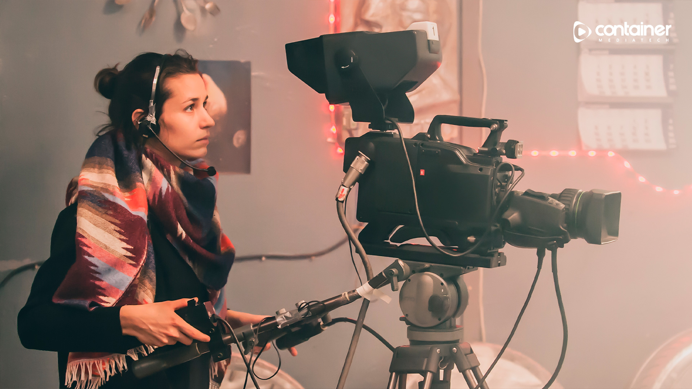

-
Ensino Superior:
Atualmente Pedro Tavares está cursando o Ensino Médio, portanto não chegou a ingressar em nenhum curso Universitário, contudo, ele espera passar em uma Universidade Federal, ou e uma particular caso consiga uma boa bolsa, para cursar Cinema/Audiovisual.
 -
Curso Técnico - IFSULDEMINAS:
Pedro está cursando o último ano do Curso Técnico de Informática no IFSULDEMINAS, câmpus Poços de Caldas, pretendendo se formar ainda esse ano em 2024, caso a parem a greve.


-
Ensino Médio - IFSULDEMINAS:
Tavares,Pedro também tem o status de graduação no Ensino Médio incompleto, pois o mesmo escolheu fazer um Curso Técnico Integrado, ou seja, fazer um um curso técnico, no caso Informática, enquanto faz o Ensino Médio no IFSULDEMINAS, câmpus Poços de Caldas. Ele também está no último ano de Ensino Médio.
-
Ensino Fundamental - Escola Profissional Dom Bosco:
Durante toda a sua jornada no Ensino Fundamental 1 e 2, eles estudou na Escola Profissional Dom Bosco e com incríveis 15 anos, assim como todos de sua turma, o comum jovem Pedro se formou no Ensino Fundamental em 2021. Acesse o site da escola para saber mais!

-
Formação Complementar:
Pedro Tavares, em sua carreira, além de sua Formação Acadêmica de Titulação, objetiva-se a estar sempre aprimorando seu currículo de diferentes maneiras.
A seguir suas Formações Complementares:- Criação de um Site Simples Usando Html, Css e Javascript - 2024 - 2h
- Linguagem de Programação Python-Básico - 2024 - 18h
- princípios de Desenvolvimento de Software - 2023 - 14h
- Trabalhando em Equipes Ágeis - 2023 - 3h
- Introdução à Programação e Pensamento Computacional - 2023 - 5h
- Legislação e Negócios para o Audiovisual - 2023 - 120h
- Personagens Criativos, Método Loro - 2023,2022 - 74h,78h
- Curso Online de Desenho Criativo, Método Loro- 2021,2020 - 84h,60h
- Desenho Prático e Criativo - 2019 - 80h
-
Atividades Extras - IFSULDEMINAS
No IFSULDEMINAS, ele desenvolveu atividades extras, elas estão disponíveis Aqui!